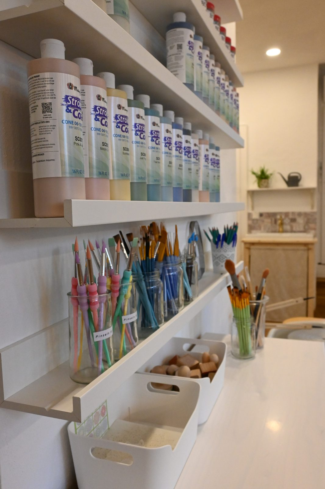
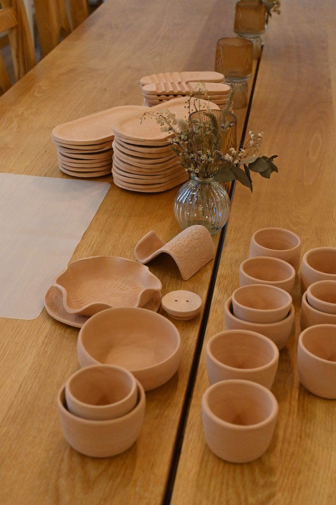
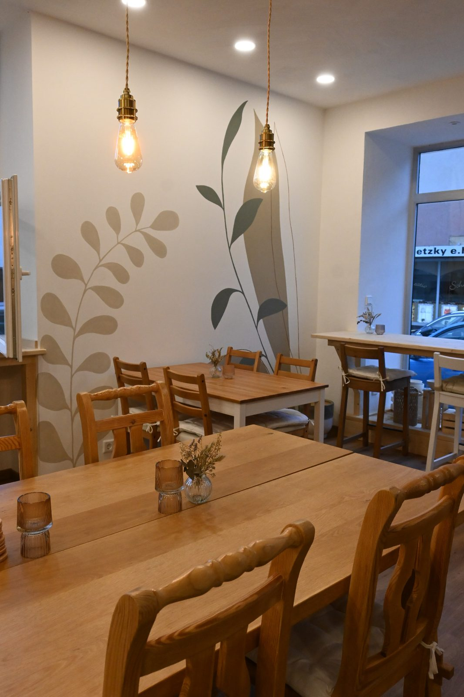
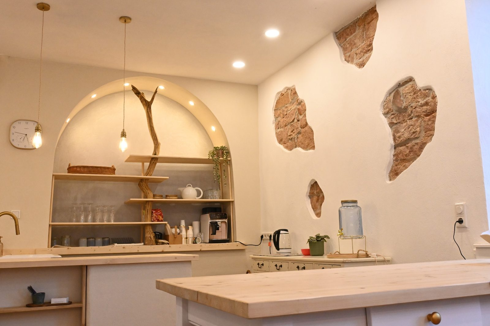
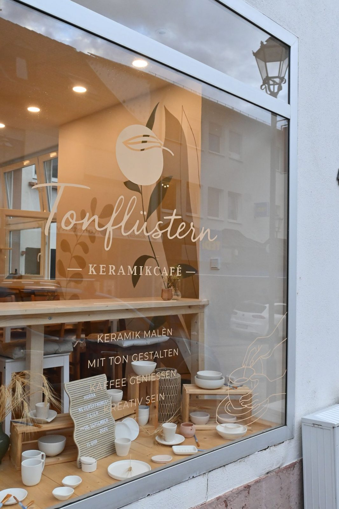
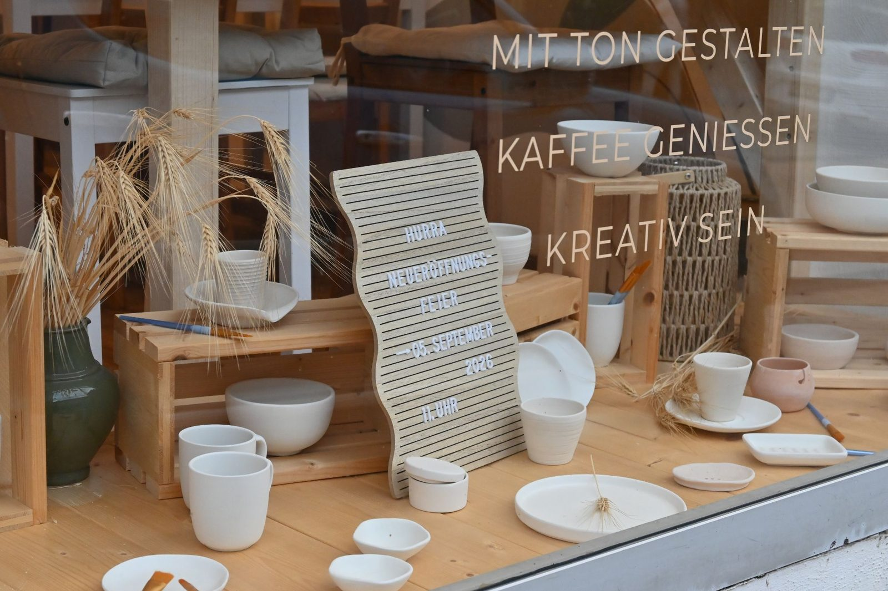

„Wo Ton und Kaffee aufeinandertreffen."
Das „Tonflüstern" ist ein besonderer Raum der kreativen Entspannung und Begegnung. Hier kannst du dich entspannt ausprobieren: Ob mit verschiedenen Farben und Maltechniken auf Keramik oder beim Gestalten mit Ton. Die gemütliche, helle und liebevoll gestaltete Atmosphäre lädt dich dazu ein, bei schöner Musik und leckeren Heißgetränken im Moment anzukommen und deine kreative Seite zu genießen.
Ob du Keramikrohlinge bemalst oder deine ganz eigenen Ideen aus Ton umsetzt – du bist allein, zu zweit oder in der Gruppe herzlich willkommen. Ob Geburtstag, Junggesellenabschied, Babyparty, Teamevent, Schulklassenausflug, Weihnachten, Ostern, Muttertag, Valentinstag oder einfach ein besonderer Abend zu zweit: Du hast auch die Möglichkeit, den Raum für eine geschlossene Gesellschaft zu mieten. Schreibe mir einfach dein Anliegen – ich tue alles Mögliche, um deinen Anlass unvergesslich zu machen.
Die Anlässe und Möglichkeiten, dir selbst oder anderen im „Tonflüstern" eine Freude zu bereiten, sind vielfältig. Sehr gerne stelle ich dir auch einen Gutschein aus, mit dem du flexible Kreativmomente verschenken kannst. Komm einfach während der Öffnungszeiten vorbei oder schreibe mir über keramikcafe@tonfluestern.de
Ich freue mich darauf, dich bald im „Tonflüstern" begrüßen zu dürfen!
Mit Farbe und Pinsel entsteht aus einem schlichten Keramikrohling etwas ganz Persönliches. Beim ruhigen Gestalten darf der Alltag für einen Moment in den Hintergrund treten. Du kannst dir Zeit nehmen, deiner Kreativität folgen und ein individuelles Erinnerungsstück erschaffen, das deine eigene Handschrift trägt.
Vorkenntnisse sind nicht erforderlich. Wenn du bei der Gestaltung, der Farbauswahl oder einer bestimmten Technik Unterstützung brauchst, erklär ich dir das gerne.

Zur Auswahl stehen unterschiedliche Formen und Preisklassen — Tassen, Becher, Teller, Schalen, Vasen oder kleine Dekorationsstücke.
Gestalte deinen Rohling mit Farben, Mustern, Schriften oder eigenen Motiven ganz nach deinen Vorstellungen. Dafür stehen dir etwa drei Stunden zur Verfügung.
Deine Keramik bleibt bei Tonflüstern. Sobald die Farben getrocknet sind, kommt eine transparente Glanzglasur darüber und das Werkstück in den Ofen. Erst dadurch bekommen die Farben ihre endgültige Wirkung und die Oberfläche ihren Glanz.
Sobald deine Keramik fertig und abgekühlt ist, kannst du sie abholen. Bescheid gebe ich über den WhatsApp-Kanal „Tonflüstern: Keramik abholbereit".
Die Keramikrohlinge liegen zwischen 5 € und 33 €. Der Preis steht direkt am Regal. Du bezahlst nur den Rohling — darin ist schon alles enthalten:
Fürs Bemalen, Glasieren oder Brennen kommt nichts dazu. Getränke werden separat berechnet, Wasser gibt es kostenlos.
Keramik bemalen eignet sich auch für Geburtstage, Teamevents oder eine gemeinsame kreative Auszeit mit Familie und Freunden. Jede Person sucht sich vor Ort einen eigenen Rohling aus und gestaltet ihn individuell.
Wenn für die Gruppe ein ähnlicher Preisrahmen gewünscht ist, stelle ich vorab eine Auswahl aus drei Rohlingen in vergleichbarer Preisklasse zusammen. So bleibt die Auswahl abwechslungsreich und die Kosten sind planbar.
Keramik bemalen ist für Anfängerinnen und Anfänger geeignet. Künstlerische Erfahrung ist nicht nötig — im Mittelpunkt stehen die Freude am Gestalten, die gemeinsame Zeit und das persönliche Ergebnis. Bitte kommt zur angegebenen Anfangszeit, damit genügend Zeit zum Gestalten bleibt.
Aus einem Stück Ton entsteht etwas ganz Eigenes. Ich zeige dir den Grundaufbau Schritt für Schritt, anschließend gestaltest du dein Werkstück mit Mustern, Stempeln und eigenen Ideen. Auch hier gilt: Vorkenntnisse brauchst du keine.

Der Kurs läuft über zwei Termine. Am ersten Termin formst du dein Werkstück. Danach trocknet es und wird ein erstes Mal gebrannt. Am zweiten Termin bemalst du es selbst — anschließend kommt die transparente Glanzglasur darüber und es geht ein zweites Mal in den Ofen.
30 € pro Person und Termin, zusammen also 60 €. Darin enthalten sind Ton, Werkzeuge, Farben, die Glanzglasur, beide Brände und die Nutzung des Arbeitsplatzes.
Für Gruppen geht es auch an einem einzigen Termin: Am Ende sucht sich jede Person eine Glasurfarbe aus, das Glasieren übernehme ich. 35 € pro Person, höchstens zehn Personen, ein zweiter Termin ist dann nicht nötig.
Bei Tonflüstern dürft ihr euch Zeit füreinander nehmen, zur Ruhe kommen und euren besonderen Anlass in entspannter Atmosphäre genießen. Der helle Raum verbindet warme Natur- und Erdtöne mit sanfter Musik und ist bewusst ruhig gehalten, damit äußere Reize für eine Weile in den Hintergrund treten können.
Bei einem Getränk, schönen Gesprächen und kreativem Gestalten entsteht eine gemeinsame Auszeit, in der jede Person etwas ganz Persönliches mit den eigenen Händen gestaltet. Dafür stehen euch bis zu drei Stunden zur Verfügung.

Alles rund um Kindergeburtstage steht ausführlich im eigenen Bereich weiter unten.
Jede Person sucht sich einen Keramikrohling aus und gestaltet ihn mit Farben, Mustern, Schriften oder eigenen Motiven.
Ist für die Gruppe ein ähnlicher Preisrahmen gewünscht, stelle ich vorab drei Rohlinge aus einer vergleichbaren Preisklasse zusammen. Am Tag selbst entscheidet sich jede Person für einen davon — so bleibt die Auswahl abwechslungsreich und die Kosten planbar.
Nach dem Bemalen bleiben die Werkstücke hier, bekommen ihre Glanzglasur und werden gebrannt. Sobald sie abholbereit sind, gebe ich im WhatsApp-Kanal „Tonflüstern: Keramik abholbereit" Bescheid.
Im Workshop erkläre ich den Grundaufbau Schritt für Schritt, anschließend gestaltet jede Person ihr Werkstück mit Mustern, Stempeln und eigenen Ideen. Dafür gibt es zwei Wege:
Am Ende sucht sich jede Person eine Glasurfarbe aus. Das Brennen, Glasieren und zweite Brennen übernehme ich — ein weiterer Termin ist nicht nötig.
Wer sein Werkstück selbst ausführlich bemalen möchte, vereinbart nach dem ersten Brand einen zweiten Termin. Die Gruppe kann noch einmal gemeinsam kommen; wer da nicht kann, bemalt nach Absprache zu einem eigenen Termin. Dieser Termin wird separat gebucht und berechnet.
Beim Töpfern sind höchstens zehn Personen möglich.
Eigene Snacks, kleine Häppchen sowie trockene Kuchen oder Muffins dürft ihr gerne mitbringen. Bitte verzichtet auf leicht verderbliche Speisen und Sahnetorten.
Auch eigene Fruchtsäfte sowie Sekt oder Wein zum Anstoßen dürfen mit. Warme Getränke wie Kaffee, Cappuccino, Latte macchiato oder Tee gibt es bei mir, Wasser steht kostenlos bereit.
Gläser, kleine Teller und Schälchen für eure mitgebrachten Speisen stelle ich bereit.
Auf Wunsch bereite ich den Tisch passend zum Anlass vor und dekoriere ihn liebevoll. Wünsche zur Gestaltung stimmen wir vorab gemeinsam ab.
So entsteht ein persönlicher Rahmen für euren besonderen Anlass — mit gemeinsamer Zeit, kreativen Momenten und selbst gestalteten Erinnerungsstücken.
Gemeinsam kreativ sein und dabei einen besonderen Tag erleben: Ab dem 7. Geburtstag können Kinder bei uns Keramik bemalen oder mit Ton gestalten — und nehmen am Ende eine ganz persönliche Erinnerung mit nach Hause.
Die Kinder lassen ihrer Fantasie freien Lauf und gestalten ihren eigenen Keramikrohling. So entsteht gleichzeitig eine persönliche und bleibende Erinnerung an diesen besonderen Tag.
Damit die Kinder während der Feier gut begleitet werden, wäre es schön, wenn eine erwachsene Begleitperson mit dabei ist. Natürlich darf sie auf Wunsch auch selbst einen Keramikrohling bemalen — dieser wird regulär berechnet.
Vorab könnt ihr gerne vorbeikommen und euch einen Überblick über die Keramikauswahl verschaffen. Dabei dürft ihr drei Rohlinge aus einer ähnlichen Preiskategorie aussuchen, die den Kindern am Geburtstag zur Wahl stehen. Alternativ sucht sich jedes Kind seinen Rohling vor Ort selbst aus.
Aus einem Stück Ton entsteht etwas ganz Eigenes: Die Kinder formen selbst und gestalten ihr Werkstück mit vielen kleinen Details. Für die Feier stehen insgesamt bis zu drei Stunden zur Verfügung.
Das Geburtstagskind entscheidet vorab, was die Gruppe gemeinsam töpfert — entweder ein Schälchen oder eine Tasse. Ich zeige den Kindern Schritt für Schritt den Grundaufbau, anschließend darf jedes Kind sein Werk nach den eigenen Vorstellungen verzieren.
Zum Abschluss sucht sich jedes Kind eine Glasurfarbe aus. Nach dem vollständigen Trocknen werden die Werkstücke von mir glasiert und gebrannt.
23 € pro Kind
Den Tisch für die Geburtstagsfeier dekoriere ich liebevoll für euch.
Sobald alle Werkstücke fertig sind, gebe ich im WhatsApp-Kanal „Tonflüstern – Keramik abholbereit" Bescheid. Sie können dann gesammelt von einer zuständigen erwachsenen Person abgeholt und privat an die Kinder verteilt werden.

Schick mir einfach eine Anfrage und wähle als Anlass „Kindergeburtstag". Schreib mir gerne dazu, wie alt die Kinder sind und ob ihr bemalen oder töpfern möchtet — dann melde ich mich innerhalb von 24 Stunden bei euch.
Lieber persönlich? Ruf an unter +49 152 29221996 oder komm einfach in der Hauptstraße 43 vorbei.
Ausführliche Beschreibungen zum Ablauf findest du weiter oben bei den einzelnen Angeboten.
Der Preis des ausgewählten Rohlings enthält Farben, Zubehör, transparente Glanzglasur, Brennen und Platznutzung.
Auf Wunsch stelle ich vorab drei Rohlinge aus einer ähnlichen Preisklasse zur Auswahl zusammen. Passend für Geburtstage, Freundesgruppen und Teamevents.
Inklusive Ton, Werkzeuge, Farben, transparente Glanzglasur, zwei Brände und Platznutzung.
Inklusive Ton, Werkzeuge, Anleitung, Glasur durch mich und zwei Brände. Ein zweiter Termin ist nicht nötig.
höchstens 10 PersonenFarben, Zubehör, transparente Glanzglasur, Brennen und Platznutzung sind enthalten.
ab 10 Personen 30 % Rabatt auf die RohlingeInklusive Ton, Werkzeuge, Anleitung, Glasur durch mich sowie Schrüh- und Glasurbrand.
höchstens 10 KinderGetränke werden bei allen Angeboten separat berechnet. Wasser steht kostenlos zur Verfügung.
Eine kreative Auszeit darf gerne von einem warmen Getränk begleitet werden. Während du malst, gestaltest oder töpferst, kannst du dir in aller Ruhe eine kleine Pause gönnen.
Alle Kaffeegetränke mit Milch gibt es wahlweise mit
Kuhmilch oder Hafermilch.
Wasser steht kostenlos zur Verfügung und kann jederzeit
nachgefüllt werden.

Kreativität verbindet Menschen. Sie schafft Raum für gemeinsame Zeit, schöne Gespräche und Erinnerungen, die bleiben. Mit einem Gutschein von Tonflüstern verschenkst du deshalb nicht nur ein kreatives Erlebnis, sondern auch einen besonderen Moment zum Abschalten und Wohlfühlen.
Er eignet sich auch wunderbar, um dem eigenen Partner oder der Partnerin eine Freude zu machen — als Einladung zu einer gemeinsamen kreativen Auszeit, bei der Nähe und bewusste Zeit im Mittelpunkt stehen.
Die Gutscheine sind liebevoll gestaltet und mit ihren natürlichen Farben und feinen Details auf die Atmosphäre von Tonflüstern abgestimmt — passend für Geburtstage, Weihnachten, einen Jahrestag oder einfach als kleine Aufmerksamkeit.
Abholen kannst du sie während der Öffnungszeiten. Passen die dir nicht, meld dich gerne — dann finden wir einen eigenen Termin.
Damit du deinen Besuch entspannt genießen kannst — Antworten rund um Kleidung, Materialien, Abholung und den Ablauf.
Die Farben sind wasserlöslich und lassen sich meist gut auswaschen, besonders solange sie noch nicht eingetrocknet sind. Trotzdem empfiehlt sich Kleidung, bei der ein kleiner Farbfleck nicht schlimm wäre.
Auf Wunsch gibt es bei mir Malkittel — sprich mich zu Beginn deines Termins einfach darauf an.
Ja. Die verwendeten Keramikrohlinge, Farben und Glasuren sind für den Kontakt mit Lebensmitteln geeignet. Nach dem fachgerechten Glasieren und Brennen kannst du Tassen, Teller, Schalen und andere Gebrauchsgegenstände ganz normal verwenden.
Die fertig glasierte und gebrannte Keramik ist spülmaschinengeeignet. Damit dein handgestaltetes Einzelstück möglichst lange schön bleibt, empfehle ich trotzdem ein schonendes Programm oder die Reinigung von Hand.
Die Fertigstellung dauert in der Regel zwei bis drei Wochen. Da Trocknung, Glasieren, Ofenbelegung und Brennen unterschiedlich viel Zeit brauchen, verspreche ich keinen festen Abholtag.
Über den QR-Code hier auf der Seite kommst du zum WhatsApp-Kanal „Tonflüstern: Keramik abholbereit". Dort stelle ich Bilder der fertig gebrannten Werkstücke ein. Sobald du deines entdeckst, kannst du es während der Öffnungszeiten abholen.
Nein. Bei Tonflüstern darfst du dich ausprobieren, etwas Neues entdecken und deine kreative Zeit ohne Leistungsdruck genießen.
Wenn du regelmäßig kommst und bestimmte Techniken intensiver kennenlernen möchtest, sprich mich gerne an. Dann schauen wir gemeinsam, was du lernen möchtest und wie ich dich dabei begleiten kann.
Keramik durchläuft beim Brennen sehr hohe Temperaturen. Trotz sorgfältiger Trocknung und vorsichtiger Ofenführung kann es in seltenen Fällen zu Rissen oder Abplatzungen kommen — etwa durch Spannungen im Material, eingeschlossene Feuchtigkeit oder unterschiedliche Wandstärken.
Nicht alles im Brennofen lässt sich vollständig beeinflussen. Sollte dein Werkstück dabei beschädigt werden, darfst du kostenlos einen vergleichbaren Rohling auswählen und neu gestalten.
Jeder Besuch bei Tonflüstern hinterlässt seine ganz eigenen Eindrücke und Erinnerungen. Vielleicht war es ein ruhiger Moment nur für dich, eine besondere gemeinsame Zeit oder einfach die Freude daran, etwas mit den eigenen Händen zu gestalten.
Wenn du möchtest, darfst du hier deine Gedanken, Erfahrungen oder ein paar persönliche Worte hinterlassen. Was hat dir besonders gefallen? Wie hast du die Zeit bei Tonflüstern empfunden? Und was nimmst du aus deinem kreativen Moment mit?
Deine Rückmeldung bedeutet mir viel. Sie hilft mir dabei, Tonflüstern mit Achtsamkeit weiterzuentwickeln, und schenkt anderen Menschen einen kleinen Einblick in die Atmosphäre vor Ort. Danke, dass du dir die Zeit nimmst, deine Worte zu teilen.
Hier ist noch nichts — magst du die erste Bewertung schreiben?
Über ein paar Zeilen freue ich mich sehr. Deine Bewertung erscheint nach einer kurzen Prüfung hier auf der Seite.
Dein Name und dein Text erscheinen nach der Prüfung öffentlich auf dieser Seite — schreib also gerne nur den Vornamen. Ich lese jede Bewertung vor der Veröffentlichung, prüfe aber nicht nach, ob jede Person tatsächlich bei mir war. Mehr dazu in der Datenschutzerklärung.
Der Kurs läuft über den ganzen Tag — du kommst einfach während der Öffnungszeiten vorbei und bleibst so lange du magst. Wähle deinen Wunschtag und schicke mir deine Anfrage; ich melde mich innerhalb von 24 Stunden.
Wunschtermin wählen
Öffnungszeiten an diesem Tag
—
Der Kurs läuft über die gesamte Öffnungszeit. Komm einfach vorbei wann es dir passt.
Deine Anfrage ist bei uns eingegangen.
Wir melden uns innerhalb von 24 Stunden. Wir freuen uns auf dich!
Tonflüstern – Keramikcafé
Inhaberin: Tatjana Bleim-Muntanion
Hauptstraße 43
64711 Erbach
Deutschland
Telefon: +49 152 29221996
E-Mail: keramikcafe@tonfluestern.de
Umsatzsteuer-Identifikationsnummer gemäß § 27a UStG:
DE463215071
Wir sind nicht bereit und nicht verpflichtet, an Streitbeilegungsverfahren vor einer Verbraucherschlichtungsstelle teilzunehmen.
Tonflüstern – Keramikcafé
Inhaberin: Tatjana Bleim-Muntanion
Hauptstraße 43, 64711 Erbach
Telefon: +49 152 29221996
E-Mail: keramikcafe@tonfluestern.de
Wenn du eine Terminanfrage abschickst, verarbeiten wir folgende Angaben: gewünschtes Angebot, Wunschtermin, Personenanzahl, Name, E-Mail-Adresse, Telefonnummer (sofern angegeben) und deine Nachricht. Zusätzlich speichern wir Zeitpunkt und IP-Adresse der Anfrage, um Missbrauch des Formulars zu erkennen.
Diese Angaben werden auf unserem Webspace beim Hosting-Anbieter gespeichert und zusätzlich per E-Mail an uns übermittelt. Das Postfach keramikcafe@tonfluestern.de gehört zum selben Hosting-Paket — es ist also derselbe Anbieter, den Punkt 6 nennt. Ein weiterer E-Mail-Dienst ist nicht beteiligt.
Eine Weitergabe an unbefugte Dritte findet nicht statt. Soweit Dienstleister dabei personenbezogene Daten verarbeiten, geschieht das ausschließlich in unserem Auftrag und nach unseren Weisungen (siehe Punkt 6). Die Übertragung erfolgt verschlüsselt (TLS).
Rechtsgrundlage ist Art. 6 Abs. 1 lit. b DSGVO (Anbahnung und Durchführung eines Vertrags), für die IP-Adresse Art. 6 Abs. 1 lit. f DSGVO (berechtigtes Interesse an der Abwehr von Missbrauch).
Wenn du eine Bewertung abschickst, verarbeiten wir den von dir angegebenen Namen, die Sternzahl und deinen Text. Zusätzlich speichern wir Zeitpunkt und IP-Adresse, um Missbrauch des Formulars zu erkennen.
Name, Sternzahl und Text werden auf dieser Website veröffentlicht, sobald wir die Bewertung geprüft haben. Zeitpunkt und IP-Adresse werden nicht veröffentlicht. Gib deshalb bitte nur einen Namen an, mit dem du öffentlich genannt werden möchtest — der Vorname genügt.
Rechtsgrundlage ist Art. 6 Abs. 1 lit. a DSGVO (Einwilligung, die du mit dem Absenden erteilst), für die IP-Adresse Art. 6 Abs. 1 lit. f DSGVO (berechtigtes Interesse an der Abwehr von Missbrauch). Du kannst deine Einwilligung jederzeit widerrufen und die Löschung deiner Bewertung verlangen — eine kurze Nachricht an keramikcafe@tonfluestern.de genügt.
Anfragen bleiben gespeichert, solange sie für die Terminabwicklung benötigt werden, und werden danach gelöscht. Bestehen steuerliche oder handelsrechtliche Aufbewahrungspflichten, speichern wir die betroffenen Angaben bis zu deren Ablauf. Du kannst unter den gesetzlichen Voraussetzungen die Löschung deiner Daten verlangen (siehe Punkt 7). Gesetzliche Aufbewahrungspflichten bleiben davon unberührt.
Diese Website setzt für Besucherinnen und Besucher keine Cookies — weder zu Werbe- noch zu Analysezwecken. Es werden auch keine Tracking-Dienste, Zählpixel oder sozialen Netzwerke eingebunden.
Alle Bestandteile der Seite — Schriften, Bilder und Programmbibliotheken — werden ausschließlich von unserem eigenen Server geladen. Beim Aufruf der Seite werden daher keine Daten an Dritte übertragen.
Das gilt auch für die Bezahlung: Auf dieser Website gibt es keinen Bezahlvorgang und keine Schaltfläche eines Zahlungsdienstes. Bezahlt wird erst vor Ort im Café — bar oder mit Karte. Über die Website fließen dabei keine Zahlungsdaten an Dritte.
Lediglich beim Aufruf der internen Übersichtsseite für den Betrieb wird ein technisch notwendiges Sitzungs-Cookie gesetzt. Für Besucher der Website entsteht dabei kein Cookie.
Diese Website und das zugehörige E-Mail-Postfach werden gehostet bei der Hetzner Online GmbH, Industriestr. 25, 91710 Gunzenhausen, Deutschland. Soweit Hetzner dabei personenbezogene Daten in unserem Auftrag verarbeitet, geschieht das im Rahmen eines Vertrags über die Auftragsverarbeitung nach Art. 28 DSGVO.
Beim Aufruf der Website erfasst der Server automatisch Angaben, die dein Browser übermittelt, und speichert sie in sogenannten Server-Protokolldateien: IP-Adresse, Datum und Uhrzeit des Zugriffs, die aufgerufene Seite, die zuvor besuchte Seite, Browser und Betriebssystem sowie die übertragene Datenmenge. Diese Angaben werden nicht mit anderen Daten zusammengeführt und dienen allein dem sicheren und störungsfreien Betrieb der Website. Sie werden für einen begrenzten Zeitraum gespeichert und danach automatisch gelöscht oder anonymisiert; die genaue Dauer richtet sich nach der Einstellung des Hosting-Systems.
Rechtsgrundlage: Art. 6 Abs. 1 lit. f DSGVO (berechtigtes Interesse am sicheren Betrieb).
Du hast das Recht auf Auskunft (Art. 15 DSGVO), Berichtigung (Art. 16), Löschung (Art. 17), Einschränkung der Verarbeitung (Art. 18), Datenübertragbarkeit (Art. 20) sowie Widerspruch gegen die Verarbeitung (Art. 21). Wende dich dafür einfach an keramikcafe@tonfluestern.de oder +49 152 29221996.
Außerdem hast du das Recht, dich bei einer Datenschutz-Aufsichtsbehörde zu beschweren. Zuständig ist der Hessische Beauftragte für Datenschutz und Informationsfreiheit, Wilhelmstraße 7, 65185 Wiesbaden.
Stand: September 2026